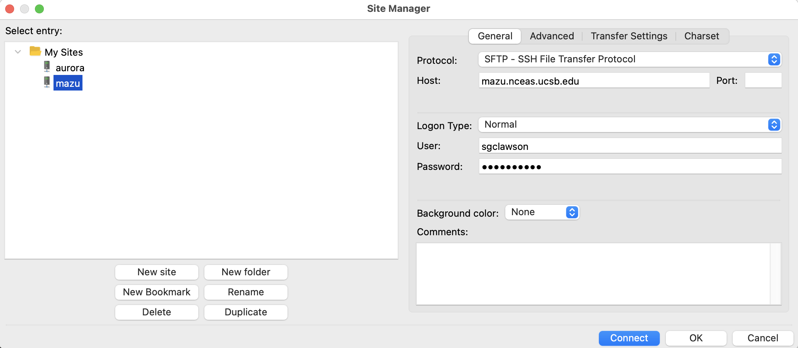
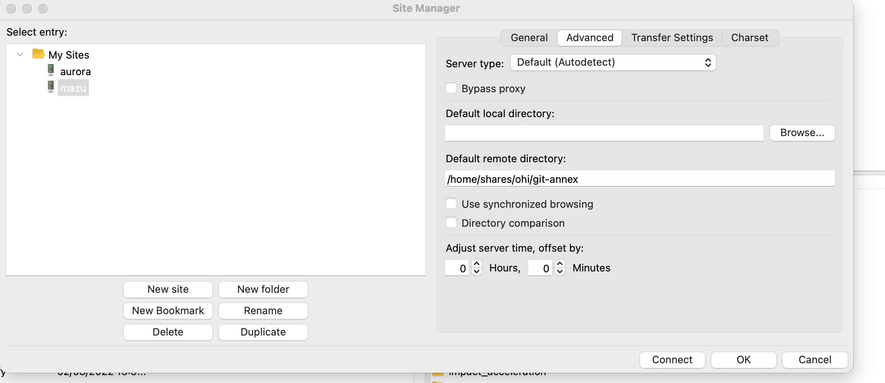
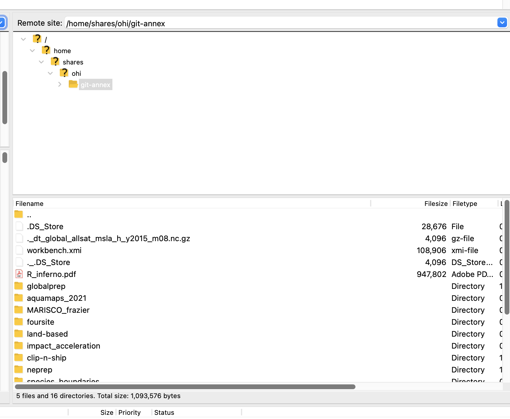

Chapter 3 Data Prep
All data layers are prepared in the ohiprep_v20?? repository.
Spend some time researching the data prior to launching into the coding in R. I look over the files in the dataprep folder on Github, as well as the Mazu folder that contains the raw data. I research the specific data layers I will be working on and the goals/pressures/resilience dimensions they are used to calculate. I typically start in the methods document. I also research the source data, looking over websites, reports, and published papers.
In regard to preparing the data, the best approach is to prepare the layer or layers within a single Rmd script and then update the OHI scores one layer at a time. This approach makes it much easier to identify and track potential errors.
This section will discuss:
- File organization
- Starting a new data prep project
- Anatomy of a typical data prep script
- Notes on parallel processing
3.1 File organization
3.1.1 Saving external data
In almost all cases, OHI data comes from other institutions. We save these data to
the NCEAS private server (Mazu) because we do not want to be responsible for distributing other people’s data.
These data are saved to Mazu: git-annex/globalprep/_raw_data in a folder that is labeled with an abbreviated version of the datasource (Figure 1). The data is saved to a folder describing the year the data was downloaded (e.g., d2015, d2016).
Figure 1: Location of raw data saved to Mazu.
Every raw data folder should have a README.md (keep the caps so it is consistent and easy to see). *Note we are using .md rather than .txt even for READMEs on Mazu.
Each README should include the following (template):
- Detailed source information. For example:
- full paper citation and link for publication
- Link to online data source
- Full email history with data provider
- If it was downloaded online, provided written and visual instructions so that the reader can mimic your same steps to get the same data. Include screenshots if possible!
- Version information for data
- Years included in the datatset
- Year the data was published
- Type of data included in the dataset (e.g., catch per species (tons) per country)
- Any other information that could possibly be useful to anyone
3.1.2 VPN Setup to Access Mazu
Here is why you will want to get your VPN accounts set up:
- You can access files on Mazu while you are offsite
- You can run intensive memory projects on the Mazu server while you are offsite
- You will functionally have two computers, so you can set up a long-running processes (on the Mazu server) and then you can work from your personal computer
This is especially important when we start working with spatial files. It is impossible to run the spatial analyses on a personal computer due to speed and memory limitations.
The VPN allows you to work from the Mazu server when you are not onsite. I almost exclusively work from Mazu. Basically, when I log in, my computer thinks I am working from NCEAS. I can access the Mazu drive. My IP address is through NCEAS and my clock displays the time in Santa Barbara.
Here is some information on getting setup: http://www.ets.ucsb.edu/services/campus-vpn/what-vpn and: http://www.ets.ucsb.edu/services/campus-vpn/get-connected
Once you have the VPN, here’s you can access Mazu via the Rstudio Mazu server, or via SFTP clients like Cyberduck or Filezilla (outlined below).
3.1.3 Setting up Rstudio Mazu Server
You will definitely want to get set up to run RStudio on Mazu! This is so great for so many reasons.
- It makes it super easy to work remotely.
- If you are running long R processes, Mazu is faster and it will not hog your computer’s resources.
- It is possible to run scripts on Mazu’s multiple cores (which is necessary to run many of our scripts).
You need to contact support@nceas.ucsb.edu to get this set up.
This is what it looks like on my computer:
3.1.4 Using Cyberduck or Filezilla to Transfer Large Files
You should consider using Cyberduck or Filezilla to view and access files on the Mazu server (I prefer to use Filezilla).
If you need to move really big files between Mazu and your computer, I find that the using mapped VPN on your personal computer typically fails. For this, I use Filezilla (Cyberduck works just fine too).
Once it is downloaded, you can open Filezilla, click the button in the top left:
This will open up a new window, where you can input the server you would like to access (the same as cyberduck): 
I like to have it connect and open directly to OHI’s
git-annexfolder, so I don’t have to navigate there from my home folder. To do this, you can click on the “Advanced” tab in the setup, and specify the default remote directory “/home/shares/ohi/git-annex”: Now you should be able to see the git-annex remote directory and explore/download files/upload files, etc! 
Instructions for Cyberduck instead of Filezilla:
After you download Cyberduck, open it up and click Open Connection.
Type in the server address mazu.nceas.ucsb.edu, your sign-in credentials, select SFTP (SSH File Transfer Protocol) in the drop down at the top (supposed to be safer), AND type in /home/shares/ohi/git-annex under “Path:”. Click Connect.
Note: You can modify the path if you want to be directed to another location in mazu.
- Now you can start dragging and dropping! Click Disconnect when you’re done using Cyberduck.
3.1.5 globalprep files
All of the R scripts and metadata used to prepare the data, as well as the final data layers are saved in the Github ohiprep_v???? repository in the globalprep folder.
The only data that will not be saved on Github are files that are too large or incompatible with Github (see below).
Primary goal/component folder The folder should be named according to the OHI target (the goal or dimension that the data is used to calculate). For example the folder for the tourism and recreation goal would be called: globalprep/tr (see table below for all folder abbreviations). These recommendations are flexible and should be modified as needed, for example goals can be combined in a single folder (e.g., spp_ico) or, there may be several folders for different components of a single goal (e.g. tr_sustainability and tr_tourists).
| target | suggested folder name |
|---|---|
| Artisanal Fishing Opportunity | ao |
| Carbon Storage | cs |
| Clean Waters | cw |
| Coastal Protection | cp |
| Coastal Livelihoods | liv |
| Coastal Economies | eco |
| Fisheries | fis |
| Habitats | hab |
| Iconic Species | ico |
| Lasting Special Places | lsp |
| Mariculture | mar |
| Natural Products | np |
| Species | spp |
| Tourism and Recreation | tr |
| Pressure | prs_additional_pressure_id |
| Resilience | res_additional_resilience_id |
This folder will contain:
a README.md that will link to the appropriate information pages on ohi-science.org The README.md should follow this template.
Year-specific folders within the goal/component folder organize output by assessment year (v2015, v2016). Each of the assessment year folders should have: * a README.md (see this template) * a data_prep.R, or .Rmd that is well-documented. Here is the dataprep template. * a series of folders to organize data that include: +
rawfor ‘raw-ish’ type files that would not be on the server. This is typically for piecemeal raw data that we compile (e.g., U.S. State Department travel warnings), and not data we have downloaded from a single source (which would go on Mazu). In most cases, this folder will not be used. +intfor intermediate files (previously we’ve used tmp, working, or other naming conventions so this might not be entirely consistent). +outputfor the final data layer that is used in the OHI toolbox.
The final datasets (the ones stored in the output folder) will be preceeded by the target abbreviation followed by an underscore that provides a brief description of the data, e.g., tr_sustainability.csv).
3.1.6 Intermediate files that are too large for Github
These files will be saved on Mazu, the internal server’s, globalprep folder.
Our goal is to have everything (except for data obtained from other sources) stored on GitHub, but some files are too large or inappropriate for GitHub and must be stored on Mazu. Each of these files should be stored in a way that mirrors that on Github. If there is a need to make a duplicate folder on git-annex, it should have the same name as the folder used in GitHub.
Store any intermediate or final output files that are too large for github in these folders. Keep the same subfolder structure. If you are working in spp_ico and have temporary rasters to store on Mazu, save them in a folder named int.
Raw data should not be stored here. This should be stored in Mazu’s _raw_data folder
3.2 Starting a new data prep project
3.2.1 Prepare the dataprep folder
In ohiprep_v20??/globalprep navigate to the folder that contains the files you will need to prepare the data. Select the most recent assessment year of data and copy/paste to create a new folder in the same location, changing the name to reflect the current assessment year.
For example, if we are preparing data layers for the 2019 assessment for the artisanal opportunities goal, ao, we would copy the v2018 folder and name it v2019.
Next, delete all unnecessary files, particularly the files in the raw, intermediate, and output folders! New versions of these data will be created in the updated data_prep script, and you want to be sure that this is indeed what happens. If there are data already in the folder it can be easy to overlook a mistake, such as not using the correct file path to save the data, etc..
Typically, you will not delete the dataprep script/s and README. You will also want to preserve the folder structure. If in doubt, I delete the files and then copy them over as needed. For some goals, such as fisheries, there are lots and lots of files and it is very confusing. In these cases, I just copy the files as I need them.
Once you have created and cleaned the new folder commit and push the updates!
3.2.2 Start an issue
On Github create an issue for this dataprep project. Here you will document progress, report problems or concerns, pose questions, describe changes to code, and report on final results. For example, if working on the artisanal opportunities dataprep, name the issue “Artisanal opportunities”.
Once the relevant data layers are created and incorporated into the OHI scores this issue will be closed.
3.2.3 Update the files
Carefully walk through the data prep scripts and update as necessary.
You will also need to update READMEs.
As you check and update the scripts, don’t assume everything is correct. There could be changes to the source data that introduce errors (this often happens). We could have made a mistake somewhere. And, even if there aren’t any mistakes, there is usually room for improvement.
Checking the dataprep scripts involves:
- Going through each line of code to understand what is happening. Each step of dplyr chains should be evaluated, rather than running the entire chain and assuming it is correct.
- Using functions such as summary, dim, length functions and figures to explore the data at different stages of preparation.
- Check the dimensions of the dataframe after each join or spread/collapse to ensure the length of the updated data makes sense.
- Check that the frequency of NA values seems reasonable, especially after joins and spread/collapse functions. And, if you gapfill missing values, make sure that you end up estimating all NA values. Note: for some layers, uninhabited/low-population regions will be manually assigned NA values.
3.3 A typical data prep script
All data prep is performed in R or, preferrably, R Markdown (Rmd) documents. Rmd is an ideal format because it seemlessly integrates code and documentation, can display figures, and the output provides a clean methods document.
We have several shared practices for preparing data:
- Ideally Rmd/R files are used to download and save source datafiles, but this isn’t possible in most cases due to the format of the data.
- We put a large premium on documenting the steps used to prepare data!
- In many cases, the data preparation for a goal is performed in a single file. But, for more complex goals it is better to break the data preparation into multiple Rmd documents. If multiple Rmd documents are used, a README must describe what each Rmd document does, the input/outputs, and the order of processing.
- If a process is run multiple times, the code should be converted to a function and placed in folder labeled R or worklflow.
- The
herepackage, andhere()function should be used control relative file paths. - We use the tidyverse for tidying data
A typical data prep script (or series of scripts) will include the following sections, which are described in more detail below:
- Summary: general description of the data prepared by the script
- Updates: updates to source data and/or methods from previous year
- Data sources: description of source data
- Set up: code chunk that loads relevant R packages and functions
- Data prep: code chunks for preparing the data, this is typically the bulk of the Rmd file
- Gapfilling: code chunks for estimating and documenting missing data
- Results check: code used to check results
- Final run: a final run of all the code after restarting R
A generic data prep Rmd file is located on Github: https://raw.githubusercontent.com/OHI-Science/ohiprep/master/src/templates/generic_data_prep.Rmd
3.4 prep Rmd: 1. Summary
This section describes the purpose of the script and the data layers that are generated.
For example, the 2019 AO summary looks like this:
- “This script generates the”need” layer for the artisanal opportunities goal. The “access” layer, which is not updated due to a lack of a data source, is located here: globalprep/res_mora_ao/v2013/data/r_mora_s4_2013a.csv.”
3.5 prep Rmd: 2. Updates
This section describes all the updates to source data and/or methods since the previous year’s assessment.
For example, the 2019 AO updates look like this:
- “Uninhabited and low population regions now given an NA value (vs. a gapfilled value).”
- “Added an additional year of GDP data from the World Bank”
3.6 prep Rmd: 3. Data sources
This section describes all data sources and may include:
Reference: [citation for source data; website, literature, contact information. Version of data (if relevant).]
Downloaded: [date downloaded or received]
Description: [e.g., surface aragonite state]
Native data resolution: [e.g., 1 degree, 30 m, country, etc.]
Time range: [e.g., 1880-1899, monthly data provided for each year]
Format: [e.g., NetCDF, Excel file]
For example, the 2018 AO data sources section looks like this:
Downloaded: 7/23/2018
Description:
GDP adjusted per capita by PPP (ppppcgdp)
http://data.worldbank.org/indicator/NY.GDP.PCAP.PP.KD
Reported at country scale.
GDP per capita based on purchasing power parity (PPP). PPP GDP is gross domestic product converted to international dollars using purchasing power parity rates. An international dollar has the same purchasing power over GDP as the U.S. dollar has in the United States. GDP at purchaser’s prices is the sum of gross value added by all resident producers in the economy plus any product taxes and minus any subsidies not included in the value of the products. It is calculated without making deductions for depreciation of fabricated assets or for depletion and degradation of natural resources. Data are in constant international dollars based on the 2011 ICP round.
Data is available directly to R through the WDI package.
Time range: 1990-2017
3.7 prep Rmd: 4. Set up
This code chunk is used to load packages, source functions, and set variables used throughout the analyses.
Here, you can also initialize programatic creation of raw, intermediate and output file folders within the specific layer directory:
# check if 'raw', 'intermediate', and 'final' folders exist in the current assessment folder, if not, then create the folder in the working directory
if (!file.exists(here("globalprep/layer_name/v20??/raw"))){
dir.create(here("globalprep/layer_name/v20??/raw"))
}
if (!file.exists(here("globalprep/layer_name/v20??/intermediate"))){
dir.create(here("globalprep/layer_name/v20??/intermediate"))
}
if (!file.exists(here("globalprep/layer_name/v20??/output"))){
dir.create(here("globalprep/layer_name/v20??/output"))
}3.7.1 Packages
The packages we load depend on the analyses, but we always use:
- dplyr and tidyr: data wrangling tools a cheatsheet
3.7.1.1 Packages commonly include, but are not limited to:
OHIcore package which contains all the proprietary OHI functions
- library(ohicore)
- Check to see if it is installed and install it if not:
if (!("ohicore" %in% installed.packages())){devtools::install_github("ohi-science/ohicore")}
General data analysis and wrangling packages:
library(here)- controls file paths, learn more herelibrary(tidyverse)- includes ggplot2, readr, stringr, tidyr, and dplyrlibrary(plotly)- create interactive ggplotslibrary(zoo)- usually used for time series data
Packages used for spatial analysis:
library(raster)- reading, writing, manipulating, analyzing and modeling of gridded spatial datalibrary(fasterize)- a better way to convert a shapefile to a raster filelibrary(sf)- a new version of sp, providing a standardized way to encode spatial vector datalibrary(sp)- classes and methods for spatial datalibrary(rgdal)- tools for dealing with coordinate reference systems
Parallel processing libraries (usually used for data prep involving large spatial files):
library(parallel)library(foreach)library(doParallel)
3.7.2 common.R
Nearly all scripts will source a common.R file. This file creates several objects that make it easier to conduct an OHI assessment. This includes:
| object | description |
|---|---|
| dir_M | file path to Mazu |
| mollCRS | crs code for the mollweide coordinate refernce system we use in the global assessment |
| regions_shape() | A function to load a simple feature object called “regions” with polygons for land/eez/highseas/antarctica regions. The “regions” object uses the Mollweide coordinate reference system. |
| ohi_rasters() | function to load two rasters: global eez regions and ocean region |
| rgn_data() | function to load 2 dataframes describing global regions |
| rgn_syns() | function to load dataframe of region synonyms (used to convert country names to OHI regions) |
| low_pop() | function to load dataframe of regions with low and no human population |
| UNgeorgn() | function to load dataframe of UN sociopolitical regions, typically used to gapfill missing data |
To load the data in a data function:
source('http://ohi-science.org/ohiprep_v2019/workflow/R/common.R')## This file makes it easier to process data for the OHI global assessment
## by creating the following objects:
##
## * dir_M = identifies correct file path to Mazu (internal server) based on your operating system
## * mollCRS = the crs code for the mollweide coordinate reference system we use in the global assessment
## * regions_shape() = function to load global shapefile for land/eez/high seas/antarctica regions
## * ohi_rasters() = function to load two rasters: global eez regions and ocean region
## * region_data() = function to load 2 dataframes describing global regions
## * rgn_syns() = function to load dataframe of region synonyms (used to convert country names to OHI regions)
## * low_pop() = function to load dataframe of regions with low and no human population
## * UNgeorgn = function to load dataframe of UN geopolitical designations used to gapfill missing data# call the function to load the data, the message describes the available data:
region_data()## loads 2 dataframes: rgns_all and rgns_eez
## rgns_all = includes eez/high seas/antarctica regions, IDs correspond with region shapefile and raster
## rgns_eez = includes only eez regionshead(rgns_all)## rgn_type type_w_ant rgn_id rgn_ant_id rgn_name
## 1 eez eez 1 1 Cocos Islands
## 2 eez eez 10 10 Nauru
## 3 eez eez 100 100 Republique du Congo
## 4 eez eez 101 101 Namibia
## 5 eez eez 102 102 South Africa
## 6 eez eez 103 103 Sao Tome and Principehead(rgns_eez)## rgn_id rgn_name eez_iso3 territory admin_rgn_id admin_country_name
## 1 1 Cocos Islands CCK yes 16 Australia
## 2 2 Christmas Island CXR yes 16 Australia
## 3 3 Norfolk Island NFK yes 16 Australia
## 4 4 Macquarie Island AUS yes 16 Australia
## 5 5 New Caledonia NCL yes 179 France
## 6 6 Vanuatu VUT no 6 Vanuatu
## Notes
## 1
## 2
## 3
## 4
## 5
## 63.7.2.1 metadata for common.R
dir_M and mollCRS
The following are the dir_M and mollCRS objects:
## dir_M describes the path to our internal server based on your computer's operating system
## NOTE: The following may be different on your operating system
dir_M## [1] "/home/shares/ohi"## mollCRS is the code for the Mollweide coordinate reference system
mollCRS## Coordinate Reference System:
## Deprecated Proj.4 representation:
## +proj=moll +lon_0=0 +x_0=0 +y_0=0 +ellps=WGS84 +units=m +no_defsregions_shape
The regions_shape function returns a simple feature object called “regions”. Regions is the master global shapefile that includes polygons for land, eez, high seas, and antarctica regions in the Mollweide coordinate reference system.
Sometimes it is necessary to convert from a simple feature object to a shapefile object because some functions still do not work with simple feature objects, or, if the spatial file is modified, a saved shapefile may be desired. This is accomplished like this:
regions_shape <- as(regions, "Spatial")
The regions file with eez (dark blue), fao or high seas (light blue), and antarctica or CCAMLR (green) regions.
The regions object is a simple feature multipolygon spatial object in the Mollweide coordinate reference system. There are 7 fields described in the table
| field | data type | description | examples |
|---|---|---|---|
| type_w_ant | factor | identifies all polygons as eez, fao (high seas), ccamlr (antarctica), or land | eez (n=220), fao (15), eez-ccamlr (19), land (220), land-ccamlr (9), eez-disputed (1), land-disputed (1), eez-inland (3), land-noeez (38) |
| rgn_type | factor | similar to type_w_ant, but does not specify eez/ccamlr and land/land-ccamlr regions | eez (n=239), fao (15), land (229), eez-disputed (1), land-disputed (1), eez-inland (3), land-noeez (38) |
| rgn_ant_id | numeric | region ids | 1-250 country land and eez (these are the official global regions; some numbers are skipped); 255 disputed land and eez; 260-277 fao high seas; 301-337 (country land, no eez); 248100-288300 CCAMLR regions |
| rgn_id | numeric | region ids; similar to rgn_ant_id, but Antartica/CCAMLR regions lumped as region 213 | 1-250 country land and eez (these are the official global regions; some numbers are skipped); 255 disputed land and eez; 260-277 fao high seas; 301-337 (country land, no eez) |
| rgn_name | character | country/territory name | e.g., Afghanistan, Belize, Prince Edward Islands |
| rgn_key | factor | 3 letter identification code | e.g., AFG, BEL |
| area_km2 | numeric | area of region, km2 | range of 1-30604795 |
ohi_rasters
The ohi_rasters function returns two rasters, “zones” and “ocean”, both with ~1 km resolution and the mollweide coordinate reference system.
The “zones” raster cell values are the OHI region ID. The raster cell values can be linked to the region names using the region_data() function, and the rgn_ant_id variable from rgns_all.csv. This raster is typically used to extract pressure data for the eez regions.
The “ocean” raster identifies ocean cells with a value of 1, and other cells are NA [NOTE: There is something weird about this raster in that it lists the values as 0, 255 (min, max), when in fact there are only 1 and NA values! If you need to convince yourself of this, you can use the freq(ocean) function to identify all cell values.]. This raster file is typically used to mask the ocean regions for pressure data.
region_data()
The region_data function returns two dataframes, “rgns_all” and “rgns_eez”.
The “rgns_all” dataframe includes data for the eez, fao, and ccamlr ocean regions. The IDs in rgn_ant_id correspond to the IDs in the zones raster. Once raster data are extracted for each region, the output is often aligned with the data in this dataframe.
Metadata for rgns_all dataframe
| field | data type | description | examples |
|---|---|---|---|
| rgn_type | factor | similar to type_w_ant, but does not specify eez/ccamlr and types | eez (n=239), fao (15) |
| type_w_ant | factor | identifies all ocean polygons as eez, fao (high seas), ccamlr (antarctica) | eez (n=220), fao (15), eez-ccamlr (19) |
| rgn_id | numeric | region ids; similar to rgn_ant_id, but Antartica/CCAMLR regions lumped as region 213 | 1-250 country eez (these are the official global regions; some numbers are skipped); 255 disputed eez; 260-277 fao high seas |
| rgn_ant_id | numeric | region ids | 1-250 country eez (these are the official global regions; some numbers are skipped); 255 disputed eez; 260-277 fao high seas; 248100-288300 CCAMLR regions |
| rgn_name | character | country/territory name | e.g., Afghanistan, Belize, Prince Edward Islands |
The “rgns_eez” dataframe includes data for the 220 OHI regions plus Antarctica (rgn_id 213). This file is used to make sure that all regions are included in dataprep files. It also includes data to indicate whether regions are territories. This can also be used for gapfilling (in some cases, it makes sense to assign territories the same value as their administrative country).
Metadata for rgns_eez dataframe
| field | data type | description | examples |
|---|---|---|---|
| rgn_id | numeric | official global regions (except Antarctica, 213) | 1-250 |
| rgn_name | character | country/territory name | e.g., Afghanistan, Belize, Prince Edward Islands |
| eez_iso3 | factor | 3 letter identification code | e.g., AFG, BEL |
| territory | boolean | identifies whether the region is a territory | yes/no |
| admin_rgn_id | numeric | administrative country rgn_id if a territory, otherwise the rgn_id | 1-250 |
| admin_country_name | character | administrative country name if a territory, otherwise the country name | e.g., Afghanistan, Belize, Canada |
region_syns()
Observed synonyms for each region, such that each region may have multiple synonyms. These data are used to convert outside data to the OHI region name and ID. This list is updated nearly everytime we run an assessment!
Metadata for region_syns dataframe
| field | data type | description | examples |
|---|---|---|---|
| rgn_id | numeric | region ids | 1-250 |
| rgn_name | character | country/territory name | e.g., Federated State of Micronesia; Micronesia, FS; Micronesia (Federated States of) |
| rgn_key | factor | 2-letter code for countries | e.g., FM |
| eez_iso3 | factor | 3-letter code for countries | e.g., FSM |
| rgn_typ | factor | status of region | disputed, landlocked, largescale (global, world); ohi_region |
low_pop()
Includes data for 21 regions with 0 and low populations. These data are used to identify regions that should have NA values because the goal does not apply to regions with no/low populations (e.g., livelihoods and economies).
Metadata for low_pop dataframe
| field | data type | description | examples |
|---|---|---|---|
| rgn_id | numeric | region ids | 1-250 |
| rgn_nam | character | country/territory name | e.g., Macquarie Island, Wake Island |
| Southern_Island | boolean | indicates if region is a southern island | 1/0 |
| Inhabited | boolean | indicates if region is uninhabited | boolean, 1/0 |
| est_population | numeric | number of established people in region | 0-3000 |
UNgeorgn()
Each global regions UN georegion based on social and geopolitical considerations.
Metadata for UNgeorgn dataframe
| field | data type | description | examples |
|---|---|---|---|
| rgn_id | numeric | region ids | 1-250 |
| r0_label | factor | most inclusive category | World |
| r1_label | factor | 7 classes | Africa (N=46), Americas (3), Asia (39), Europe (43), Latin America and the Caribbean (48), Oceana (34) Southern Islands (7) |
| r2_label | factor | 22 classes | e.g., New Zealand, Melanesia |
| rgn_label | character | global region name | e.g., Cocos Islands, Christmas Island |
| Inhabited | boolean | indicates if region is uninhabited | boolean, 1/0 |
| est_population | numeric | number of established people in region | 0-3000 |
3.8 prep Rmd: 5. Data prep
We follow several coding practices when preparing our data:
Code chunks are broken into manageable pieces and are proceeded by a description of what is being accomplished
The code within a chunk is documented to make it easier to follow and to help prevent errors. For example, expected values and results are described to help prevent potential errors (e.g., check to see all values between 0-1, length should be 0, etc.).
Run-on dplyr chains are avoided because they are impossible to follow and prone to error!
Data is checked throughout the dataprep process (checking dimensions of data after joins, special attention to missing data, etc.)
Intermediate data files are saved if they computationally take a long time to create or have information that could be useful in other aspects of the analysis.
The here package is used to standardize file paths.
The final output should be a dataframe that includes:
- rgn_id All 220 regions should be included in the final file!
- year This should include all years of data necessary to calculate scores for all scenario years, including trend. For some data layers the data has never been updated, in these cases, there is still a year column but it may only contain a single year.
- value This column will contain the calculated value for the data, and the column name will vary across datasets. In general, naming conventions should be consistently used every year, but feel free to modify the column name if you feel it could be improved. Just be sure to make the corresponding change to the “name_data_fld” in this file: https://github.com/OHI-Science/ohi-global/blob/draft/metadata_documentation/layers_eez_base.csv.
This file should be saved as a .csv file in an “output” folder. In general, the name of the file should be the same as the previous year. However, if you feel the file name can be improved, you will need to update the fn variable in this data file:
https://github.com/OHI-Science/ohi-global/blob/draft/metadata_documentation/layers_eez_base.csv
3.8.1 OHI data idiosyncracies: Low population/uninhabited regions and grouped regions
Recently we have standardized how we identify low population regions, using the low_pop() function in the common.R file. These regions are assigned NAs for some goals (e.g. GDP values used in AO) and perfect scores for others (e.g. sanitation access). Use the following code to establish a vector of low pop regions that can be compared against the final dataset.
# After sourcing common.R and gapfilling data:
low_pop()
# Filter out regions that have populations > 3000 and keep NA values
low_pop <- low_pop %>%
filter(est_population < 3000 | is.na(est_population))
# Make a vector of low population region IDs:
low_pop_vector <- c(low_pop$rgn_id)
# Assign NA values in score column for low popuation areas:
gapfilled_dataset$score[gapfilled_dataset$rgn_id %in% low_pop_vector] <- NASeveral of the datasets we use also report OHI regions as a group, and we want to report them all at the same scale/resolution used in OHI. For instance, Bonaire, Sint Eustatius and Saba are often reported together as “Caribbean Netherlands” or combined as “Bonaire, Sint Eustatius and Saba”. Use the following code to apply the data to all three regions:
# Assuming "tidy_dataset" has been wrangled, cleaned, and has column "country"
CN <- filter(tidy_dataset, country=="Caribbean Netherlands") %>%
rename(country_old = country) # country could also be rgn_name
CN_subregions <- data.frame(country_old = "Caribbean Netherlands",
country = c("Bonaire", "Sint Eustatius", "Saba")) %>%
left_join(CN) %>%
select(-country_old)
# Remove lines of data for Caribbean Netherlands and replace with individual region-level data for the three subregions:
tidy_dataset <- tidy_dataset %>%
filter(country != "Caribbean Netherlands") %>%
rbind(CN_subregions) 3.9 prep Rmd: 6. Gapfilling
We make every effort to gapfill missing data. The only legitimate reason for a region to have an NA value is if the goal is not relevant to the region. For example, the livelihoods and economies goal is not relevant for an uninhabited island.
We have a paper describing why and how we estimate missing data: https://journals.plos.org/plosone/article?id=10.1371/journal.pone.0160377. But the following is the short version.
The first step to gapfilling missing data is to identify datasets that are predictive of the variable you are attempting to estimate and is also more complete. Here are some of the general approaches we use to estimate missing global data:
- Some missing data can be estimated from the original source. For example, if there are some missing years within a dataset, we can often estimate these values using a linear model of available data. For spatial raster data, we often estimate missing values using nearby raster cells.
- Secondary datasets can also be used to estimate missing values. For example, we gapfill some missing Social Progress Index values using World Governance Index data as a predictor. And, in many cases we use UN geopolitical data that classifies countries based on geopolitical and social variables to predict missing data.
- And, we often use multiple approaches to estimate missing values within a dataset.
Our goal is to estimate missing data using the simplest model that best predicts the data. Given this, it is necessary to determine whether datasets and model terms actually predict missing data and to compare the performance of multiple models. Ideally cross-validation methods are used to evaluate how well the models predict missing data, otherwise models will appear to perform much better than they actually do.
There is no point in having a model with many predictive variables and complex non-linear fits if it performs no better than using a simple mean of the existing data!
3.9.1 Training linear models for gapfilling
Basic gist: Use alternative datasets to predict data points for a dataset you have limited data points for. In this instance, we had FMI data points for 40 regions included in the OHI, and needed to gapfill the remaining 180 regions. We checked for correlation between the FMI data and several other datasets, including AO need (rescaled GDP per capita per person purchasing power), GDP per capita, social progress index (SPI), world governance indicator (WGI), and UN georegions.
A detailed example can be found here
Steps:
- Collect data that you’ll use to predict values, and merge with existing data (only use the values that correspond to data you already have to create this df)
- Look at correlation between alternative data sets cor.test() and pairs.panels()
- Create initial model:
mod1 <- lm(dep_variable ~ ind_variable, data=df_name)- Look at
summary(mod1)to check for R-squared and p-value - Create an array of predicted values:
df_predicted <- df_name %>%
dplyr::group_by(rgn_id) %>%
dplyr::do({
pred <- predict(mod1, newdata =.[c('ind_variable')]) # creates a new column for predicted values
data.frame(., fmi_pred) # do loop applies the model fitting and prediction to each country group
}) %>%
dplyr::ungroup()- Plot predicted vs actual values:
ggplotly(ggplot(df_predicted, aes(x = dep_variable, y = pred, labels = rgn_id)) +
geom_point() +
geom_abline(slope = 1, intercept = 0, color = "red"))Note: “rgn_id” is just an example of a column in the dataset with a unique value for each observation.
lm() can also include multiple independent variables (must be merged into one data frame with one row for each observation): mod2 <- lm(dep_variable ~ ind_variable + ind_variable2, data=df_name)
Compare models for fit and degrees of freedom:
AIC(mod1, mod2)Use best-fit model to gapfill areas without data using do loop as shown in step 4.
If using UN georegions to gapfill, you’ll want to use the most specific/granular label possible. Use separate models for regional and continental levels (r2_label vs r1_label as described in metadata above), and write code to tell R to grab the data from the most granular data available. Example from FMI model comparison .Rmd:
fmi_gf_all <- fmi_gf1 %>%
left_join(fmi_gf2, by=c("rgn_id", "r1_label", "r2_label", "rgn_label", "year", "spi", "fmi")) %>%
mutate(gapfilled = ifelse(is.na(fmi) & !is.na(fmi_pred_r2), "1", 0)) %>%
mutate(method = ifelse(is.na(fmi) & !is.na(fmi_pred_r2), "SPI + UN_geopolitical region r2", NA)) %>%
mutate(fmi = ifelse(is.na(fmi), fmi_pred_r2, fmi)) %>%
mutate(gapfilled = ifelse(is.na(fmi) & !is.na(fmi_pred_r1), "1", gapfilled)) %>%
mutate(method = ifelse(is.na(fmi) & !is.na(fmi_pred_r1), "SPI + UN_geopolitical region r1", method)) %>%
mutate(fmi = ifelse(is.na(fmi), fmi_pred_r1, fmi))3.9.2 Saving gapfilling report files
Gapfilling steps are often mixed with the dataprep code. Once the gapfilling is done, we will save a dataset describing which data were gapfilled and the method. Every dataset should have a corresponding gapfilling dataset…even if there was no gapfilling.
The gapfilling record is saved with the same name as the corresponding output data, but with a “_gf” extension.
The gapfilling dataset should mirror the corresponding dataset in regard to the number of rows and identifying columns (e.g., rgn_id, commodity, year, etc.). The gapfilling datset should include three additional columns that indicate the following:
- gapfilled: a zero or one value (or, NA if the value in the original data is NA) indicating whether the data was gapfilled or not.
- method: a short descriptor of the method that was used (this should be described more fully somewhere in the documentation).
- error: a numeric value describing the error around the estimate. This should be left blank if this was not determined (most of the time this will not be estimated).
3.10 prep Rmd: 7. Results check
It is critical to check the final output data!
Here are some of the ways we check data:
- Is each region included in the final data?
- Does the number of values for each region/year make sense (in most cases there should only be one value for each region/year)
- Does the ranking of the values make sense? Do the high and low performing regions seem reasonable?
- Do the number of NA values seem reasonable (ideally there will be none, unless the goal does not apply to that region)
- Does the range/distribution of values seem reasonable, for example, some outputs should range from 0-1.
The functions I use most commonly to check data are:
hist(), summary(), dim(), table()
Because we calculate the global index every year, the most powerful way of checking our data is to compare the current data with last year’s data. In most cases, source data will remain the same from year to year (although some agencies will update previous data). Consequently, any changes will often reflect changes to the model and/or mistakes.
For this comparison we typically compare the most recent shared year of data between the two assessments. The following code walks through this process using data calculated for the lasting special places goal. In this case, we will pretend we have just completed preparing the data for the 2018 assessment and we want to compare the results to the 2017 assessment. Here we focus on the data for the 3nm offshore region.
library(dplyr)
library(here)
library(ggplot2)
library(plotly)
# want the region data from here:
source('http://ohi-science.org/ohiprep_v2019/workflow/R/common.R')
new <- read.csv(here("globalprep/lsp/v2018/output/lsp_prot_area_offshore3nm.csv"))
summary(new)
old <- read.csv(here("globalprep/lsp/v2017/output/lsp_prot_area_offshore3nm.csv"))
summary(old)The most recent shared year between the two datasets is 2017, so this is the year that will be compared. The old and new values are plotted as a scatterplot, with a point for each region. We create an interactive plot and add a one-to-one line to make it easier to determine which regions have changed. Any changes in values will reflect either changes to the source data or changes to the data prep script.
It is important to explore the reasons for these changes because it could reflect errors!
# get region names
region_data()
head(rgns_eez)
compare <- new %>%
rename(a_prot_3nm_new = a_prot_3nm) %>%
left_join(old, by=c("rgn_id", "year")) %>%
filter(year == 2017) %>%
left_join(rgns_eez, by="rgn_id") %>%
select(rgn_id, rgn_name, year, a_prot_3nm, a_prot_3nm_new) %>%
mutate(region=paste(rgn_id, rgn_name, sep = "-"))
summary(compare)
compare_plot <- ggplot(compare, aes(x=a_prot_3nm, y=a_prot_3nm_new, label=region)) +
geom_point() +
geom_abline(slope=1, intercept=0, color="red")
ggplotly(compare_plot)In this case, the values for most regions remain the same from the 2017 to 2018 assessment, however, there are some changes. The biggest change was for Antarctica, which we can ignore because we do not calculate scores for Antarctica for the global assessment. However, there is also a fairly large change in the Greece data, and some smaller changes for some other regions.
By carefully exploring the source data we found that these differences reflect updates to the source data. For example, a marine reserve may have been established in 2017, but weren’t yet incorporated into the World Database on Protected Areas.
3.11 prep Rmd: 8. Final run
The final step is to commit and push all files. Then, close R and do NOT save the workspace image. The purpose of closing everything is to clear the memory of all data objects to make sure that the code still runs. This may be a problem if we change object names but fail to make necessary corresponding throughout the code.
I typically close everything by opening another repository.
Restart R and return to the ohiprep repo and rerun everything (except any really long processes).
Check the following:
- Does all the code still run?
- Do you get the same results (check to see if output csv files are loaded to the Git window, this indicates that the data probably changed)?
- Review warnings
- Identify parts of the code you are unsure of, and have someone review
3.12 Notes on parallel processing
In OHI, we often use parallel processing packages to process data-intensive spatial layers. Parallel processing allows multiple computations to take place at the same time. For more information, check out this introductory resource from NCEAS.
Note: below is essentially copy and pasted from this reference issue and might need more context to be helpful
Vignette on getting started with doParallel and foreach packages refers to two ways to use parallel processing in the doParallel package.
Method 1: registerDoParallel(4)
OR
Method 2:
cl <- makeCluster(4)
registerDoParallel(cl)
foreach(i in 1:10) %dopar%{}
stopCluster(cl)3.12.1 stopCluster & makeCluster
Stopping your cluster:
If you are using snow-like functionality, you will want to stop your cluster when you are done using it. The doParallel package’s .onUnload function will do this automatically if the cluster was created automatically by registerDoParallel, but if you created the cluster manually you should stop it using the stopCluster function: stopCluster(cl)
Stack overflow discussion on whether cores stop being registered after foreach finishes
Tip: Limit to 5 or fewer cores for any data prep
3.12.2 Using htop to check on processes running
Sometimes a process will be running that slows down the whole system, and htop can help identify and stop the source of this issue.
When you are logged into the Mazu RStudio server window, open the terminal shell.
type
htopand hit enterWhen you press enter, a matrix will appear showing how many cores are being used, and the processes running underneath
- Kill processes by scrolling with arrow keys or by clicking on them. Click ‘kill’ or hit k on the keyboard
- ‘Send signal’ bar will open with 15 SIGTERM highlighted - hit enter, or esc to cancel
Note: some users have problems with RStudio crashing when trying to kill processes in the terminal window. Using the terminal on your computer should work with no problem. To do this, open the terminal and login using ssh username@mazu.nceas.ucsb.edu and hit enter. Enter your password (letters will not appear) and hit enter to login, then follow the steps above.